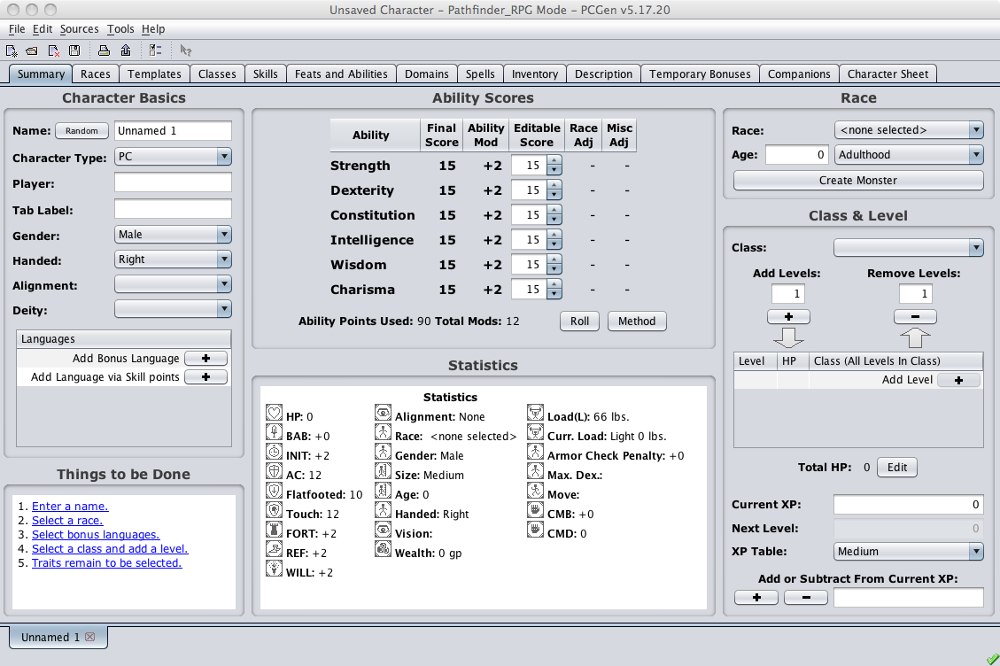
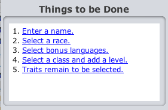
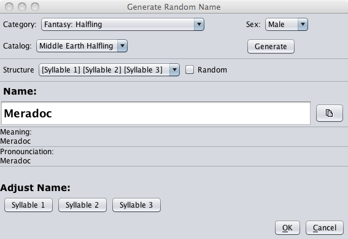
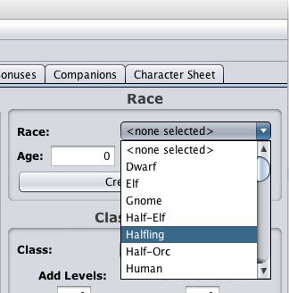
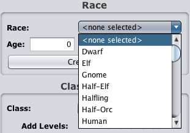
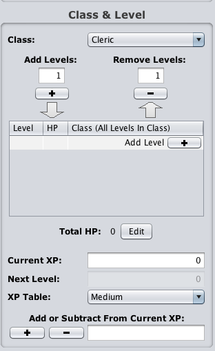
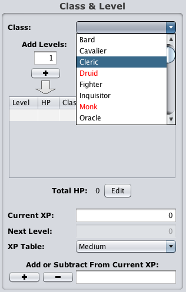
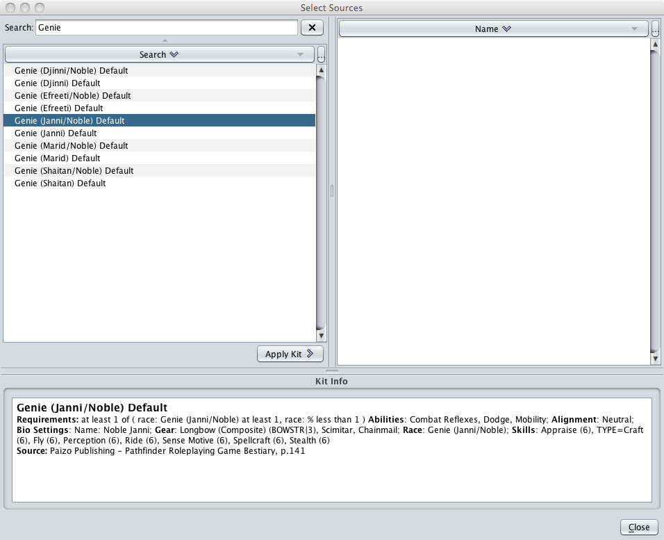
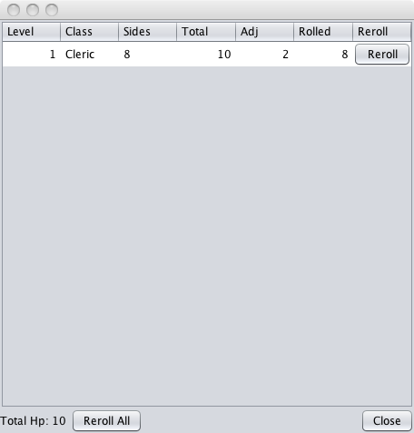
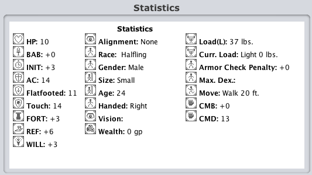

The Summary tab is the starting point through which the user will build the PC. The tab is designed to speed up character creation by having the most commonly used aspects available for quick access.


The Things to be Done pane provides a list of ot-links that, well, list things to be done. Clicking on the link will take you to the Tab where the task can be completed. As you complete each item it will be removed from the list.
The Character Name field is for the name of the actual character for in play use/reference.

If creating names from scratch is not your forte, you can use the Random button found to the left of the Character Name field. This button will pop up a window giving you options to create a new name for your PC.
The Tab Label text field is allows you to add to your character's name as well as to change how your character's name appears on the tab labels within PCGen. So if your Character name was "Bob the Headsman", and you added "The Squimish" to the Tab Label field, the character output and tab labels within PCGen would display "The Squimish".
The Player Name text field is for your name, so that when the GM has a stack of 50 characters, and he doesn't remember who's character is whose by the character name, it makes their life easier.
The Alignment drop down menu is to select your characters alignment.
 
The Race drop down menu is used for quick access to the races available from the source materials you have loaded.
 
The Class drop down menu is used for quick access to the classes available from the source materials you have loaded. Classes that appear in red contain prerequisites that the character does not meet. As an example, Druids require that the character have an "Alignment" of some flavor of "Neutral".
The Add Levels and Remove Levels section contains 3 elements:

The Create Monster button opens the Add Kit window, allowing you to apply any kits your character qualifies for, including any Default Monster Kit. As long as you have not selected a Race the full list of Default Monster Kits will be available to select from. This is the fast way to create monsters, create a new character and add a Default Monster Kit.
The Ability Point Total reports how many total character stat points you have used (Starting at zero).
The Total Mods reports your total stat modifiers from your characters stats.

The HP button will bring up the hit points window to edit the character's hit points.

The Statistics window, will give you a short overview of what your characters abilities are based upon the race and class(es) you have selected.